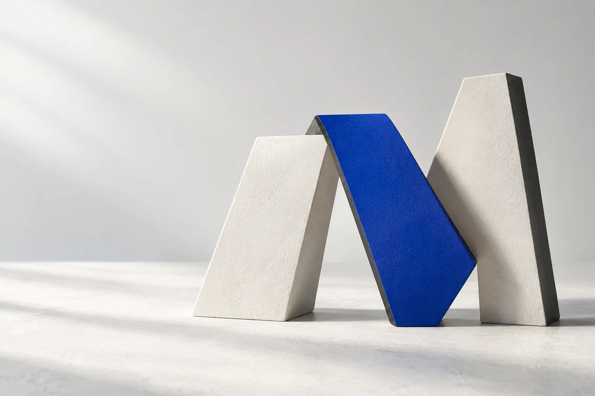
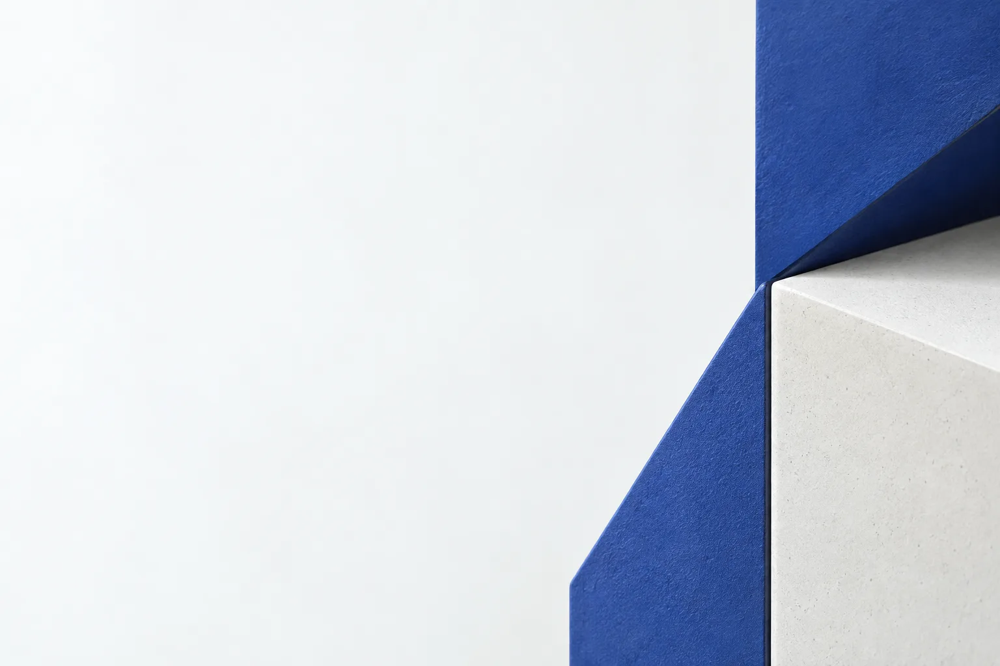

INTERNES DESIGNMUSTER · 01
Ein System.
Viele Anwendungen.
Die Bausteine der aktuellen Vorschau. Gemeinsame CSS-Regeln statt einer zweiten Komponentenbibliothek.
Farbe
Eine klare Palette.
Porzellan
--bg · #f7f8faGraphit
--text · #20242cKobalt
--accent · #284be8Helle Fläche
--raisedSekundärtext
--muted · #576171Typografie & Aktionen
Wenige Worte.
Ein klarer nächster Schritt.
Schibsted Grotesk, lokal geladen. Große Überschriften, kurze Absätze und verständliche Linktexte.
Websites für Ihren Betrieb.
Eine Hauptaktion pro Abschnitt. WhatsApp bleibt eine erkennbare Alternative.
Bildsprache
Formen, die zusammenpassen.


Beide Bilder wurden für diesen Entwurf generiert. Keine Kundenreferenzen oder Fotografien eines realen Betriebs.
Leistungsmuster
Lesbare Zeilen.
Prüfbare Muster